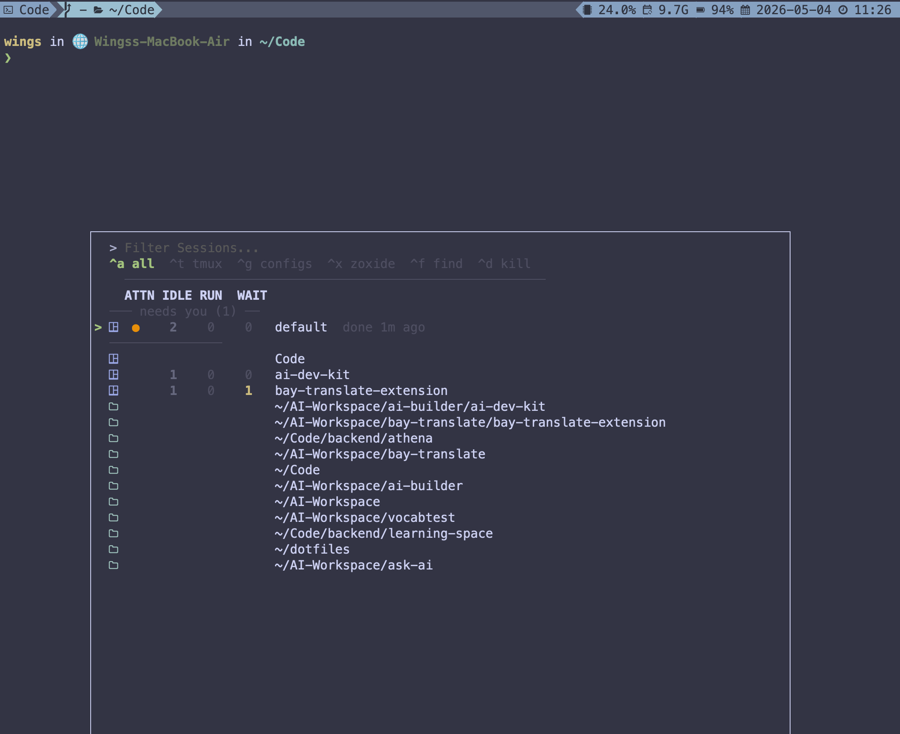

Mission control for parallel Claude Code agents
Spin up Claude Code in many tmux sessions at once — the picker shows every agent’s live status, so you know who to attend to next.

1 2 3busy → idle transition, ATTN ● lights up, the “needs you” group pins it to the top, and a done 1m ago timestamp gets stamped on the row — a sticky reminder independent of current state, dismissed only when you attach in.
busy + subagent) · WAIT blocked on OAuth / permission — a single row may hold many Claude instances at once.